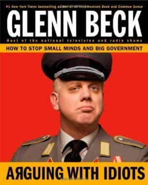

< < < Back
What We Can Learn From The Collapse Of Glenn Beck’s Empire – Return Of Kings
The 2016 election cycle is one that will be remembered by many as both a divisive and entertaining affair. Although these observations are both positive and accurate ones, the election’s most important legacy consists of the fact that it has signaled the end of many “conservatives” or “republicans” who have turned against their own allies for short term political points. While this list is a long one that includes the likes of Mark Levin, Ben Shapiro and the National Review, the most prominent one is undoubtedly Glenn Beck, whose meteoric decline makes the fall of the Roman Empire appear childish in comparison.
While the immediate events surrounding the collapse of his network have been well documented by news outlets on both sides of the political spectrum, they fail to address a deeper issue, namely “when did Beck’s fall from grace begin, and what precipitated it?” In order to answer these questions, it is necessary to briefly examine three key errors that Beck made as both an individual and a political icon. By understanding these critical mistakes, our readership at Return Of Kings will gain greater insight into what makes individuals fail beyond the point of no return, and how to avoid making those mistakes themselves.
Beck caved to the SJWs

The face you make after you let the left win.
As masculine men, we have many truths to use as a basis for living our everyday lives to the fullest. While the diverse array of rules concern topics game, self-improvement, and keeping your word as a man, there is one commandment that towers above all else. This rule consists of NEVER GIVING INTO THE LEFT’S DEMANDS. It doesn’t matter whether they have a rare but valid point or if they exert unwavering pressure on their target, we must never admit defeat because we suffer irreparable losses if we do so. To make matters worse, leftists share many similarities with crack addicts or attention whores, in that giving them what they want will just make them demand MORE from you with no end in sight.
An important example of his cheese-eating surrender monkey personality occurred when the left launched a broadside of personal attacks against him after he aired a “controversial” segment on campus rape statistics. After he was attacked by the likes of feminist sites such as Jezebel, Beck had two choices.
Behind door #1 was his first choice, which would‘ve consisted of him striking back and mocking the left to such an extent that they would never even consider the possibility of attacking him again. His other option, behind door #2, was to give in to the left by accepting and adopting their narrative. Unfortunately, he chose the latter by opting to disclose personal aspects of his family’s history in an effort to show that he had a right to discuss the issue.
This was a major miscalculation on his part because not only did his actions have no effect on the left, but also because he revealed his true nature to his supporters. When faced with adversity, Beck is the type of person who would rather curl up in the fetal position than endure hardship.
Beck lost the last vestiges of his sanity
How many sane Americans would dress like this outside of Oktoberfest?
If one does even a small amount of research on Beck’s past, it is apparent that he has endured countless struggles and internal conflicts. While his comeback from alcoholism is an admirable one which shows that most men are capable of redemption, it can be argued that his downhill spiral began again after the left targeted his family in a New York City park. This is especially true for his business ventures, which have suffered immensely over the fast few years due to his decision-making. As a result of these decisions, the worst being his decision to shift away from news and into film-making, his media empire is on the verge of bankruptcy and is the subject of a pending lawsuit.
Although his bad business decisions are indicative of his flimsy grasp on reality, what’s even more troubling is the manner in which Beck has conducted himself while all of this was occurring. In addition to his well-known Cheetos incident, Beck’s decline can be measured by the manner in which he has turned on his close friends and associates and a video he released in which he attributed his 2009 comments on Obama to a form of brain tumor.
In a business context, what normal person would make the decision to move away from the market which has made him successful, into a series of half baked plans and ill-advised ventures? What’s even more disturbing is that he seemingly made these decisions while lacking any sort of plan that would enable his media empire to absorb the ensuing risk, which is one of the main reasons as to why his empire is currently on its last legs. As far as his personal conduct is concerned, I can’t think of many sane individuals who would turn on longtime friends at the drop of a hat or who would fire loyal employees.
Beck failed to properly assess the political climate

Yes, this guy thinks Trump supporters and the Alt-Right are “Nazis”.
While Beck put himself in a difficult situation by caving to the left and allowing himself to lose touch with reality, these issues alone wouldn’t have ruined him forever. This is because, even in the midst of personal weakness or a mental breakdown, a strong willed person can find a way to overcome their circumstances to improve their situation.
Some of history’s greatest leaders, philosophers, and artistic figures were able to achieve success only when their world was figuratively burning around him. Unfortunately for Beck, however, this will never happen for him because he failed to properly assess the political climate around him, thus alienating many of his supporters and permanently destroying his political credibility in the eyes of most normal people.
This all changed with this Presidential Election cycle and the rise of Donald Trump as a symbol of a larger shift in American politics. Traditional conservatism, which at best is a watered down version of leftist beliefs, is no longer a viable political platform. Instead, the key themes of this election include border security, economic protectionism, non-interventionism, nationalism, and the rejection of the political elite. These themes, coupled with the threats America currently faces due to mass migration, deteriorating race-relations, and terrorism, all clearly demonstrate that the traditional conservative agenda has failed and that it is time for a new movement to succeed where it has failed.
Beck could easily have profited and perhaps delayed his empire’s inevitable collapse by embracing nationalism. Instead, he decided that he was going to become a “libertarian” and proceeded to label anyone who disagreed with him as an enemy of liberty or as a Nazi. His abhorrence of nationalism is so strong that it led him to describe this election in messianic terms, which culminated in him pretending he was a minister and suggesting that Ted Cruz was anointed by God to win this year’s election.
Arguably, it was his conduct over the course of this election that has sealed his fate as a public figure and as a businessman. Although there are legitimate criticisms of Trump that can be made, the possibility of another Clinton in the White House overrules all of those arguments. Even some of the more intelligent NeverTrumpers are realizing that if Clinton gets into the White House and has her way with our immigration system and the Supreme Court, then there will be no America in 2020. In spite of what’s at stake in this election, Beck is still coming down on Trump, Alt-Righters, and nationalists harder than he did any leftist. It is through these actions that Beck has displayed his true colors for all to see. He is a social justice warrior, and the fact that many of his former supporters have realized that was the final nail in his media empire’s coffin.
Conclusion

The current state of The Blaze.
In ancient Chinese culture, a cycle was used to describe how dynasties rose to power and then subsequently collapsed over time. If a leader was able to overcome hardship and adversity, he achieved “the mandate of heaven”, which enabled him to build a powerful empire and lasting dynasty. However, he would eventually stray from his core principles, at which point he would lose the mandate as well as everything he had struggled to build.
Beck lost his mandate when he caved to the SJWs, because when he responded to them by validating their complaints, he slowly began to adopt their characteristics. By subconsciously adopting these traits, which were at odds with his supposed beliefs and business strategy, he began to unravel both professionally and personally. Finally, as his world was collapsing around him, he squandered his last chance to turn things around by moving against the populist surge that is dominating this election cycle, revealing his true nature in the process.
As a result of all of this, there is a real possibility that Beck might commit suicide soon, as evidenced by his response to Ted Cruz’s endorsement of Donald Trump. The only silver lining that can be drawn from his meteoric decline is that it serves as a lesson to all of us at Return Of Kings to stay on the straight and narrow, never give into the SJWs, never turn our backs on one another, and to approach politics in a detached manner.
Read More: The Humiliation Of A Great Empire